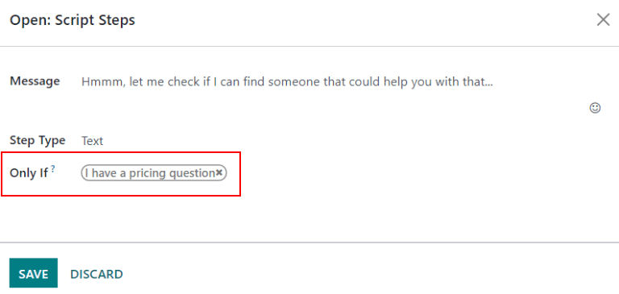
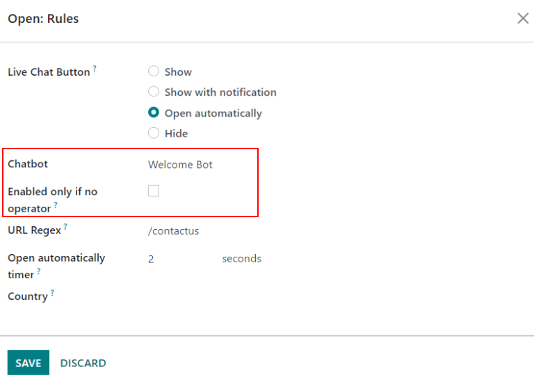

Bots de chat¶
Un bot de chat es un programa diseñado para imitar una conversación con un humano y funciona con un guion que debe seguir con pasos escritos previamente. Los guiones están diseñados para pronosticar la respuesta de un visitante y guiarlo mediante una serie de preguntas y respuestas de la misma manera que lo haría algún miembro del equipo.
Puede personalizar los bots de chat para que desempeñen varias funciones como proporcionar atención al cliente o crear leads y recopilar información de contacto. El objetivo del bot de chat depende de la página del sitio web que se le asigne, los mensajes en su guion y algunos otros criterios.

Crear un bot de chat¶
Antes de crear un nuevo bot de chat debe instalar la aplicación Chat en vivo en la base de datos, puede instalarla desde el menú de . Busque Chat en vivo en la barra de búsqueda y haga clic en Instalar.
También puede instalar y habilitar Chat en vivo si se dirige a la aplicación y selecciona la casilla etiquetada Chat en vivo. Después de esto, la base de datos se actualizará y podrá acceder a la aplicación Chat en vivo.
Abra la aplicación Chat en vivo después de instalarla en la base de datos y vaya a .
Nota
Cuando instala la aplicación Chat en vivo, se crea un bot de chat de muestra con el nombre Bot de bienvenida. Este bot tiene un guion preconfigurado con algunos pasos básicos, como preguntar por el correo electrónico de un visitante o enviar esa conversación a un operador.
Puede utilizar el Bot de bienvenida como base, ya que puede editar o eliminar los pasos existentes. También puede agregar nuevos pasos para personalizar el guion según sus necesidades.
Puede eliminar (o archivar) el Bot de bienvenida.

Para crear un nuevo bot de chat, vaya a la página de bots de chat (aplicación ) y haga clic en Nuevo. Se abrirá una página con detalles para el bot de chat en blanco.
En la página de detalles para el bot de chat a completar, escriba la información correspondiente en el nombre del bot de chat y haga clic en el icono editar imagen en la esquina superior derecha del formulario para agregar una imagen.
Guion para el bot de chat¶
Una vez que creó y le proporcionó un nombre al nuevo bot de chat, debe crear un guion. Las conversaciones del bot de chat siguen el guion adjunto compuesto por líneas de diálogo, las cuales están diseñadas para proporcionar u obtener información.
Para crear el guion que utilizará el bot, vaya a la pestaña Guion de la página de detalles del bot de chat y haga clic en Agregar una línea para abrir el formulario emergente Crear pasos de guion.
Debe llenar este formulario con cada línea de texto (diálogo) que el bot de chat podría proporcionar durante la conversación.
Primero, escriba el contenido del mensaje en el campo Mensaje y luego seleccione una opción en el menú desplegable Tipos de paso.
Tipos de paso¶
El tipo de paso seleccionado depende del propósito que tenga el mensaje. Las opciones disponibles en el menú desplegable Tipo de paso se encuentran a continuación, así como su uso y cualquier información adicional:
Texto¶
Este paso se utiliza para los mensajes donde no se espera o no es necesaria una respuesta. Puede usar los pasos de texto para enviar un saludo o para proporcionar información.
Importante
Los tipos de pasos de texto solo tienen como objetivo proporcionar información, pues no permiten que los visitantes escriban una respuesta. Además, necesitan pasos adicionales para poder continuar con la conversación.
Pregunta¶
Este paso hace una pregunta y proporciona un conjunto de respuestas. El visitante hace clic en una respuesta y como resultado crea un nuevo paso en la conversación, también puede proporcionar un enlace opcional a una nueva página web.
Truco
Es útil agregar una respuesta general (por ejemplo, «Algo más») a los pasos de preguntas. Esto ayuda a los visitantes a continuar la conversación, incluso si lo que necesitan no coincide exactamente con ninguna de las otras respuestas.
Correo electrónico¶
Este paso solicita a los visitantes que proporcionen su dirección de correo electrónico, esta se almacena y los miembros del equipo podrán utilizarla después para realizar un seguimiento con información adicional.
Las únicas entradas aceptadas para este tipo de paso son las direcciones de correo electrónico con un formato válido. Si un visitante intenta escribir otra cosa, el bot de chat responderá que no reconoce la información enviada.
Teléfono¶
Al igual que el correo electrónico, este tipo de paso le pide al visitante que proporcione su número de teléfono. Este se podrá utilizar después para hacer un seguimiento con información adicional o para agendar demostraciones y otras actividades.
Advertencia
Debido a la gran cantidad de formatos que tienen los números telefónicos en todo el mundo, en este tipo de paso no se valida el formato de las respuestas.
Reenviar al operador¶
Este paso envía la conversación a un operador de chat en vivo activo para que pueda seguir ayudando al visitante. La transcripción de la conversación se transfiere al operador, y este podrá continuar donde se quedó el bot de chat. Esto no solo ahorra tiempo para todas las partes involucradas, también puede ayudar a calificar las conversaciones antes de que lleguen a los operadores.
Nota
Si no hay ningún operador activo disponible en el canal, el bot de chat continúa la conversación con el visitante. Asegúrese de agregar pasos adicionales después de este para que la conversación no termine de forma repentina.
Entrada libre o multilínea¶
El paso denominado «entrada libre» permite que los visitantes respondan a las preguntas sin proporcionar respuestas predefinidas. La información proporcionada en estas respuestas se almacena en las transcripciones del chat.
Elija entre Entrada libre y Entrada libre (multilínea) según el tipo y la cantidad de información que el visitante deba proporcionar.
Crear lead¶
Este paso crea un lead en la aplicación CRM. Seleccione una opción del menú desplegable Equipo de ventas para asignar el lead que se creó a un equipo específico.
Crear ticket¶
Este paso crea un ticket en la aplicación Servicio de asistencia. Seleccione una opción del menú desplegable Equipo de servicio de asistencia para asignar el ticket a un equipo específico.
Solo si¶
Los guiones del bot de chat trabajan con una base «si - entonces», es decir, la siguiente pregunta que se le hará al visitante está determinada por la respuesta que proporcionó a la pregunta anterior.
Para continuar con la conversación, el formulario para un nuevo paso contiene un campo etiquetado Solo si. En este campo se define la progresión de las preguntas.
Puede dejar vacío este campo si espera que un paso siga todos los mensajes anteriores. Sin embargo, si un mensaje solo debe enviarse de forma condicional, según las respuestas anteriores, entonces agregue esas respuestas a este campo.
Importante
Si hay alguna selección en el campo Solo si, el paso no se mostrará en una conversación a menos que haya seleccionado todas las respuestas. Solo incluya selecciones en este campo si son necesarias para mostrar este paso.
Example
En el guion del bot de bienvenida, un visitante puede preguntar sobre los precios. Si el visitante selecciona esta respuesta, se incluye un paso para enviar la conversación a un operador. El bot de chat primero envía un mensaje que le informa al visitante que está en búsqueda de un operador disponible para chatear.
Sin embargo, este mensaje solo se debe enviar si el visitante solicita información de precios. En ese caso, la conversación sería la siguiente:
Bot de bienvenida: «¿Qué está buscando?»
Visitante: «Tengo una pregunta sobre los precios.»
Bot de bienvenida: «Mmmm, déjeme revisar si puedo encontrar a alguien que pueda ayudarle con eso…»
En el formulario de detalles del paso de tipo texto se seleccionó la respuesta Tengo una pregunta sobre los precios en el campo Solo si. Este paso solo aparece en las conversaciones donde se seleccionó esa respuesta.
Pruebas con el guion¶
Para garantizar que todos los visitantes tengan una experiencia satisfactoria con el bot de chat, cada mensaje debe tener un desenlace natural. Debe probar los guiones del bot de chat para verificar que los mensajes proporcionan soluciones adecuadas y para comprender lo que el visitante ve cuando interactúa con el bot.
Importante
Si hay una respuesta predefinida o proporcionada por el visitante que no tiene asignada una respuesta para continuar, la conversación se detiene. Como el visitante no puede volver a activar el bot de chat, tendrá que iniciar la conversación de nuevo, es decir, debe actualizar la ventana de chat o su navegador.
Para probar el rendimiento de un bot de chat, primero haga clic en Probar en la parte superior izquierda de la página del guion del bot de chat. Se le redirigirá a la pantalla de prueba, responda las preguntas del bot de chat como lo haría un visitante potencial del sitio.
Cuando el guion ya no tiene más mensajes para mostrar, en la parte inferior de la ventana de chat aparece el mensaje La conversación terminó… Reiniciar. Para iniciar una conversación con el primer mensaje del guion, haga clic en Reiniciar. Para volver a la página del guion, haga clic en Volver al modo de edición en la parte superior de la página.
Agregar un bot de chat a un canal¶
Después de crear y probar su bot conversacional, debe agregarlo a un canal de chat en vivo.
Abra la aplicación y seleccione la tarjeta kanban de algún canal o cree uno nuevo. Haga clic en la pestaña Reglas del canal. Luego, abra una regla existente o cree una nueva con el botón Agregar una línea.
En el formulario de detalles emergente Crear reglas, seleccione un bot de chat en el campo correspondiente.
Si el bot conversacional solo debe estar activo si no hay operadores de chat en vivo disponibles, marque la casilla con el nombre Habilitado solo si no hay un operador.
Ver también